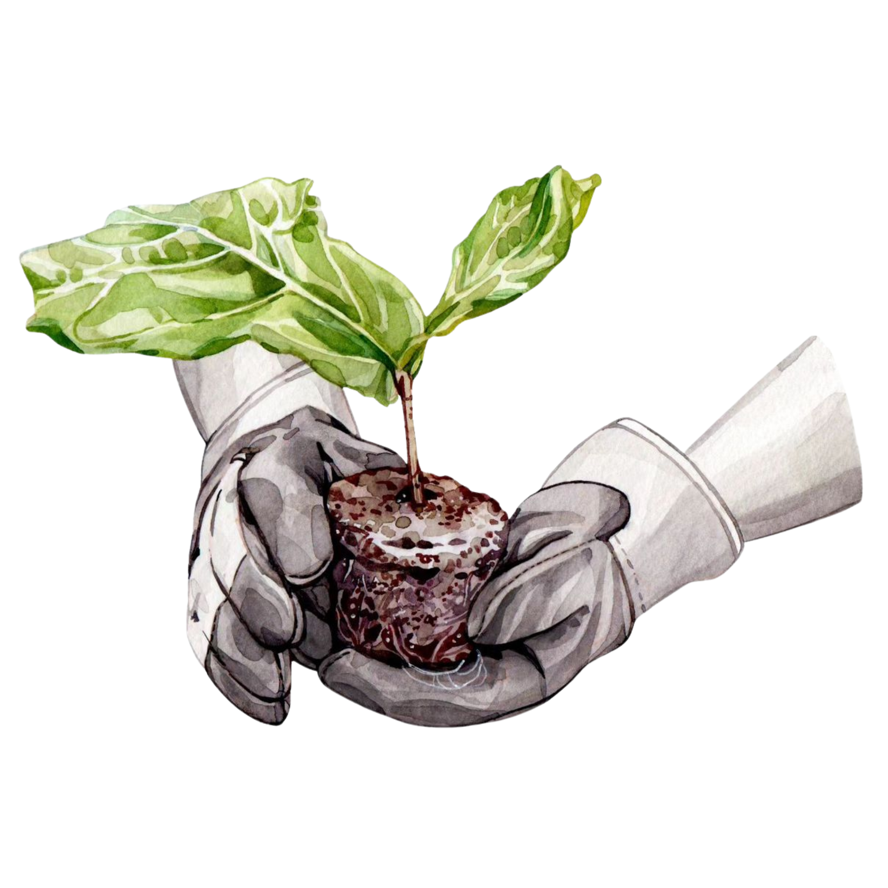
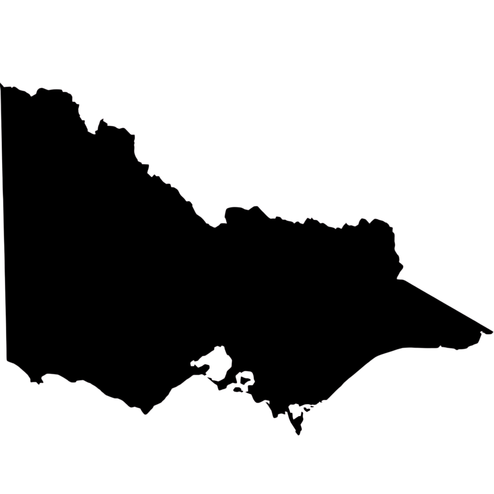
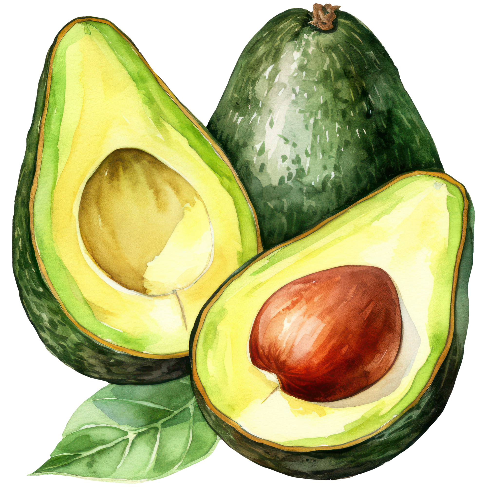
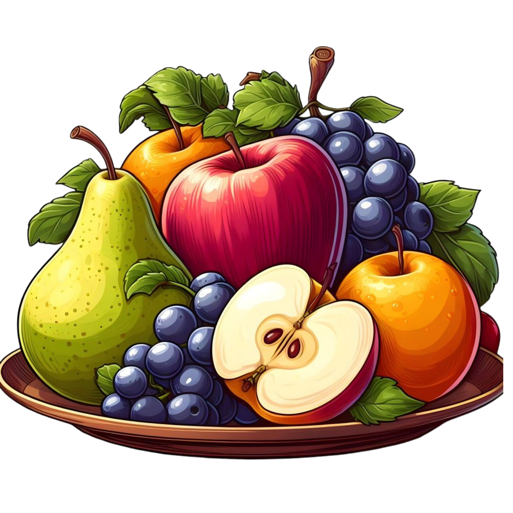

Horticulture at a Glance (2023–24)




40+ Years of Growth (Total farm gate value, $million)
From niche sector to $17 billion industry.
Over four decades, Australian horticulture has transformed from a niche domestic sector into a $17 billion industry. Growth accelerated after the 1990s as exports expanded, consumer demand diversified, and high-value crops such as fruit, nuts, and vegetables scaled nationally.
After temporary disruptions around 2019–20 driven by drought, bushfires, and pandemic pressures the industry rebounded strongly by 2023–24, reaching its highest-ever recorded value.
What Changed Over Time? (2020–21 to 2023–24)
Category breakdown of Australia's horticulture farm gate value.
Growth came from different parts of the industry.
Fruit remained Australia's largest horticulture category, while vegetables continued to form a major part of total value. Nuts, wine grapes and nursery crops show how smaller categories can still shape the industry's overall mix.
This section bridges the long-term growth story with the state-level maps that follow: the industry did not just grow larger, its category mix also changed.
Where is Horticulture Most Valuable? (2023–24)
Farm gate value by state ($million). Click on a state to see its crop breakdown.
Value clusters in the east and south.
Horticultural value is concentrated along Australia's eastern and southern regions. Victoria leads nationally with $6.9B, followed by Queensland and New South Wales.
Each state reveals a distinct crop identity shaped by climate, geography and market access, from Queensland's tropical fruits to South Australia's wine grapes.
Who's Rising? State Rankings Over Time
By total farm gate value
Queensland moves into second place.
Victoria has held the top spot throughout, but the story below it is changing. Queensland climbed past New South Wales to become Australia's second-largest horticulture state by 2023–24.
Who Gained the Most? 2020–21 vs 2023–24
Change in farm gate value ($million)
Recent growth is uneven.
Queensland recorded the strongest absolute growth over four years, reinforcing its rise as a horticulture powerhouse. Victoria also grew substantially, while smaller states such as Tasmania showed steadier gains despite their size.
Each State's Crop Identity (2023–24)
Farm gate value by category ($million), each axis normalised to the national maximum.
Every state grows differently.
While Victoria leads across nearly every major crop category, other states reveal specialised strengths. Queensland excels in fruit and nursery production, South Australia is defined by wine grapes, and New South Wales shows a balanced mix across fruit, vegetables, and nuts.
Together, these regional strengths create a complementary national horticulture profile. No two states are alike.
What Grows Where? (2023–24 Production)
Bubble size = production in tonnes. Click a crop in the legend to filter.
Geography shapes what we grow.
Production hubs closely reflect climate, water access, and soil conditions. Victoria's Goulburn Valley is a major centre for apples and vegetables, while South Australia's Riverland anchors almond and wine grape production.
Further north, Queensland's tropical growing regions, from the Atherton Tablelands to Bundaberg, play a central role in Australia's avocado expansion. Click a crop to explore where each production cluster emerges.
The Avocado Boom (Australia production, tonnes)
Avocado production nearly doubled in 4 years!
From 77,981 tonnes in 2020–21 to 150,913 tonnes in 2023–24, avocados are Australia's fastest-growing major crop fuelled by strong domestic demand and expanding plantings in Queensland.
Once a niche imported fruit, avocados are now a mainstream staple, and Australian growers are scaling up to meet the appetite.
What Dominates? (Farm gate value, 2023–24)
Box size = farm gate value ($million).
Fruit accounts for nearly half of all value.
Fruit dominates with $8.0 billion, contributing almost 47% of Australia's entire horticulture industry.
No single crop drives this dominance. Instead, it reflects a broad mix of apples, avocados, cherries, citrus, and other fruit crops grown across multiple states.
Vegetables follow at $4.4 billion, while nuts and wine grapes generate smaller volumes but deliver exceptionally high value per tonne.
What Did We Learn?
Australia's horticulture story is one of growth, diversity, and regional specialisation.
Over the past four decades, the industry has grown into a $17 billion sector, supported by rising domestic demand, export expansion, and increasingly specialised production systems.
Victoria remains the national leader, but Queensland's rapid rise signals shifting production momentum. Across the country, each state contributes its own agricultural identity, from tropical fruit in the north to wine grapes, almonds, and cool-climate crops in the south.
Looking ahead, fast-growing crops such as avocados, alongside high-value categories like fruit, nuts, and wine grapes, suggest that Australian horticulture is not only growing bigger, but becoming more diverse, more valuable, and more regionally distinct.